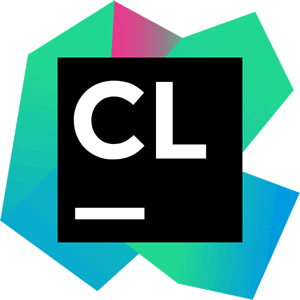
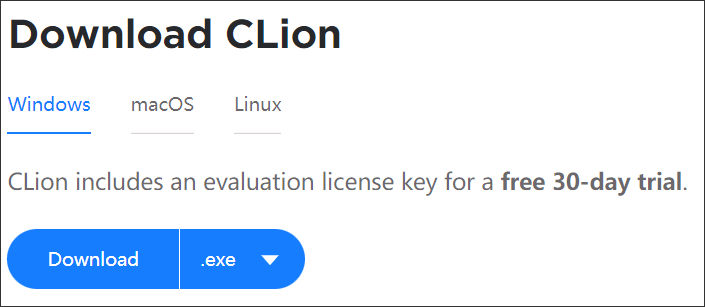
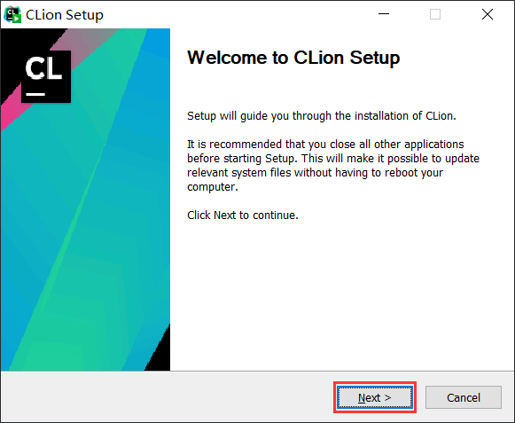
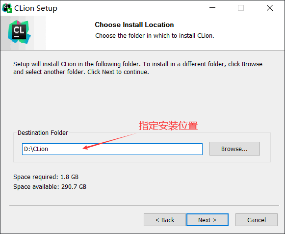
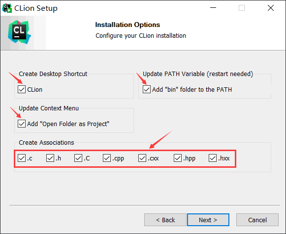
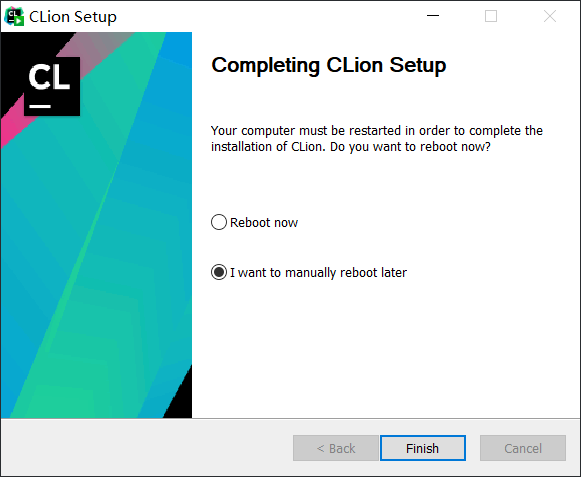
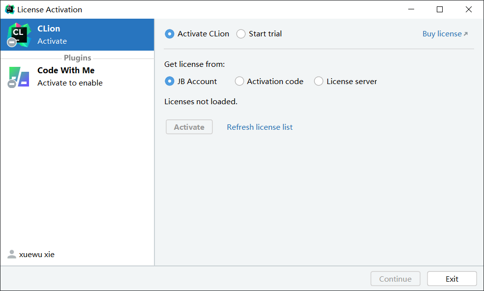
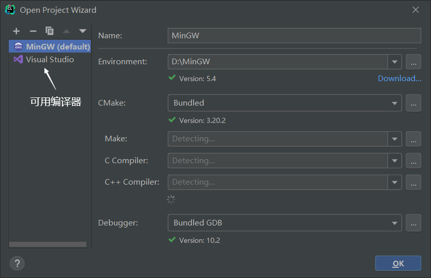
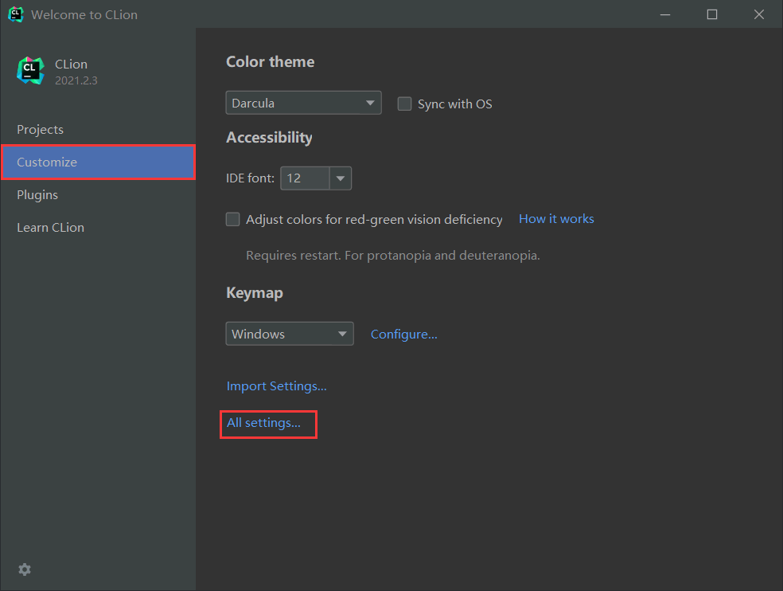
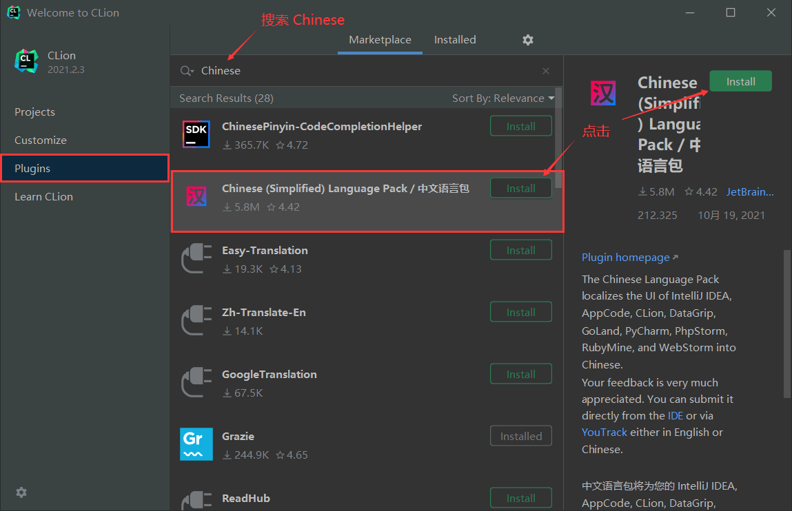

CLion下载、安装和汉化教程
CLion 是一款专为 C 语言和 C++ 设计的 IDE（Integrated Development Environment，集成开发环境），功能超级强大，既具有代码辅助、实时代码分析、集成调试器等多种基础功能，还附带版本控件等工具，可以极大地提高程序员的开发效率。
CLion 最大的优点是跨平台，在Linux、Mac、Windows 上都可以运行。CLion 还同时支持 GCC、Clang、MSVC 这 3 种编译器，使用 CLion 编写程序，程序员可以根据需要随意切换使用的编译器。
与 Dev C++、Code::Blocks 等这些 IDE 不同的是，官方没有提供免费版的 CLion，尽管网络上传播有破解版的 CLion，但还是推荐大家使用正版的 CLion。经过不断地维护和更新，目前 CLion 的最新版本是 2021.2，除了支持 C 语言和 C++ 编程外，还支持 Python、Objective-C、HTML、CSS、Swift 等语言。
接下来我们以在 Windows 10 上安装 2021.2 版 CLion 为例，给大家讲解下载、安装和汉化 CLion 的过程。
CLion 官方提供了 Windows、macOS 和 Linux 这三种平台的安装包，这里我们选择下载适用于 Windows 平台的 .exe 安装程序，下载后得到的文件名为 CLion-2021.2.3.exe。
注意，CLion 安装程序没有自带编译器，因此我们还需要自行安装 GCC、Clang 或者 MSVC。本节使用的是 GCC 编译器，下载和安装过程可以阅读《如何在Windows上使用GCC编译器？》一文。
直接点击“Next”，手动指定 CLion 的安装位置，这里选择将 CLion 安装到 D:\CLion 文件夹下，如下图所示：
点击“Next”，弹出“初始化选项”窗口，选中所有选项，如下图所示：
继续点击“Next”，然后直接点击“Install”，等待安装完成。安装完成后，如下图所示：
点击“Finish”，可以看到桌面上增加了 CLion 的启动图标。
您可以到网络上搜索可用的 CLion 激活码，或者点击 Buy license 购买 CLion。完成后，点击 continue 开始正式使用 CLion。通常情况下，CLion 会自动弹出下面的这个窗口：
在这个窗口中，我们可以选择可用的编译器。如上图所示，笔者机器上可用的编译器有两个，分别是 GCC 和 MSVC，这里选择 GCC。窗口右侧的信息通常不需要手动输入，CLion 会自动补全这些信息。
如果 CLion 没有自动弹出图 8 所示的窗口，我们可以手动找到它。在如下界面上选择“Customize”，然后点击“All settings”：
弹出下图所示的对话框，左侧选择“Build,Execution,Deployment”，再选择 “Toolchains”，就会看到图 8 所示的窗口。
找到汉化 CLion 的中文语言包并点击 Install 安装，安装完成后重启 CLion，就可以看到中文版的 CLion。

图 1 CLion图标
图 1 CLion图标
CLion 最大的优点是跨平台，在Linux、Mac、Windows 上都可以运行。CLion 还同时支持 GCC、Clang、MSVC 这 3 种编译器，使用 CLion 编写程序，程序员可以根据需要随意切换使用的编译器。
与 Dev C++、Code::Blocks 等这些 IDE 不同的是，官方没有提供免费版的 CLion，尽管网络上传播有破解版的 CLion，但还是推荐大家使用正版的 CLion。经过不断地维护和更新，目前 CLion 的最新版本是 2021.2，除了支持 C 语言和 C++ 编程外，还支持 Python、Objective-C、HTML、CSS、Swift 等语言。
接下来我们以在 Windows 10 上安装 2021.2 版 CLion 为例，给大家讲解下载、安装和汉化 CLion 的过程。
下载CLion
CLion 官方提供的下载地址为 https://www.jetbrains.com/clion/download/，如下图所示：

图 2 CLion官方下载渠道
图 2 CLion官方下载渠道
CLion 官方提供了 Windows、macOS 和 Linux 这三种平台的安装包，这里我们选择下载适用于 Windows 平台的 .exe 安装程序，下载后得到的文件名为 CLion-2021.2.3.exe。
注意，CLion 安装程序没有自带编译器，因此我们还需要自行安装 GCC、Clang 或者 MSVC。本节使用的是 GCC 编译器，下载和安装过程可以阅读《如何在Windows上使用GCC编译器？》一文。
安装CLion
打开 CLion-2021.2.3.exe，弹出如下窗口：

图 3 安装初始窗口
直接点击“Next”，手动指定 CLion 的安装位置，这里选择将 CLion 安装到 D:\CLion 文件夹下，如下图所示：

图 4 指定 CLion 的安装位置
图 4 指定 CLion 的安装位置
点击“Next”，弹出“初始化选项”窗口，选中所有选项，如下图所示：

图 5 选中所有初始化选项
图 5 选中所有初始化选项
继续点击“Next”，然后直接点击“Install”，等待安装完成。安装完成后，如下图所示：

图 6 成功安装 CLion
图 6 成功安装 CLion
点击“Finish”，可以看到桌面上增加了 CLion 的启动图标。
配置和使用CLion
第一次打开 CLion，会弹出如下所示的购买窗口：

图 7 购买 CLion
图 7 购买 CLion
您可以到网络上搜索可用的 CLion 激活码，或者点击 Buy license 购买 CLion。完成后，点击 continue 开始正式使用 CLion。通常情况下，CLion 会自动弹出下面的这个窗口：

图 8 选择可用的编译器
图 8 选择可用的编译器
在这个窗口中，我们可以选择可用的编译器。如上图所示，笔者机器上可用的编译器有两个，分别是 GCC 和 MSVC，这里选择 GCC。窗口右侧的信息通常不需要手动输入，CLion 会自动补全这些信息。
如果 CLion 没有自动弹出图 8 所示的窗口，我们可以手动找到它。在如下界面上选择“Customize”，然后点击“All settings”：

图 9 设置CLion
图 9 设置CLion
弹出下图所示的对话框，左侧选择“Build,Execution,Deployment”，再选择 “Toolchains”，就会看到图 8 所示的窗口。
汉化CLion
有些读者不习惯使用英文版的 CLion，想汉化它。实现方法很简单，在图 9 所示的界面中选择 “Plugins”，搜索“Chinese”，如下图所示：

图 10 安装 CLion 汉化包
图 10 安装 CLion 汉化包
找到汉化 CLion 的中文语言包并点击 Install 安装，安装完成后重启 CLion，就可以看到中文版的 CLion。
关注公众号「站长严长生」，在手机上阅读所有教程，随时随地都能学习。内含一款搜索神器，免费下载全网书籍和视频。

微信扫码关注公众号